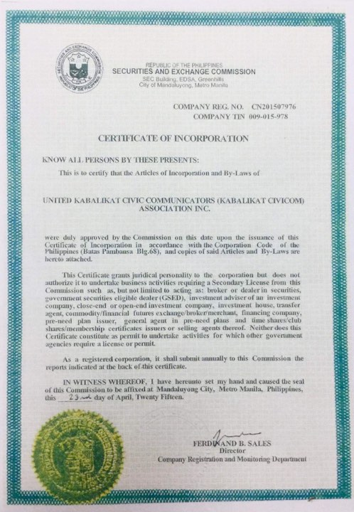

UNITED KABALIKAT CIVICOM HISTORY
As a Background History, due to deteriorating relationship with the leadership of KB, the 16
incorporators were left with no choice but to stand their ground as UNITED. Thus, the new birth
of the Organization of UNITED KABALIKAT CIVICOM was born.
More than two decades ago as KABALIKAT members, we were merely radio enthusiasts, we
assisted by following others of for what we were asked to do brought by the initiatives of our incorporators
.We kept searching for knowledge through trainings and sharing of experiences, empowered by
these and our affiliations. We are more than ever ready to be of service in our Area of Responsibility.
Over the years, we evolved into something better and so at present we do not only follow but Lead.
Each UKC chapter is independent and autonomous but guided by the CBL and its utmost support for
the UKC National Executive Council to ensure we are able to cope up with our lives as Volunteers for
what we are committed to in order to have a stronger and legal organization.
The UNITED KABALIKAT CIVICOM was conceived and organized on APRIL 23, 2015 to primarily
raise the status of communicators to a position of high responsibility and importance and to enable
radio enthusiasts to actively participate in public assistance particularly during calamities and
emergencies or whenever there is a need to ensure public comfort and convenience.
UNITED KABALIKAT CIVICOM is registered with the Securities and Exchange Commission
(SEC) with SEC registration Number CN-201-507-976 and also registered with the National
Telecommunication Commission (NTC) Under License Number FB-NC-97533-16 with the Station Call sign DUO-532.
April 23, 2015